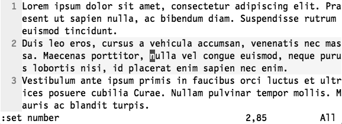
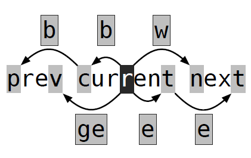

Vim用动作命令在文档中移动
用动作命令在文档中移动
| 命令 | 用途 | 命令 | 用途 |
|---|---|---|---|
| ( | 前移一句 | ） | 后移一句 |
| { | 前移一段（以空格行分辨） | } | 后移一段（以空格行分辨） |
Tip 47 Distinguish Between Real Lines and Display Lines
区分实际行与屏幕行
除 Vim 以外，其他大多数文本编辑器都没有实际行的概念，它们只提供操作屏幕行的手段。
vim的 j、 k、 0 和 $ 都用于操作实际行，而如果在这些键前加上 g 前缀的话，就会让 Vim 对屏幕行进行操作。

以截图为例，假设我们想把光标向上移一行( k )，光标会移到单词“ac”上去，这既是所谓的实际行。
我们按 gk 就会移到单词“vehicula”上，目标单词位于光标之上的一个屏幕行，这就是屏幕行。
Vim 也提供了直接跳到行首及行尾的命令
| 命令 | 移动 |
|---|---|
| 0 | 移动到实际行的行首 |
| g0 | 移动到屏幕行的行首 |
| ^ | 移动到实际行的第一个非空白字符 |
| g^ | 移动到屏幕行的第一个非空白字符 |
| $ | 移动到实际行的行尾 |
| g$ | 移动到屏幕行的行尾 |
Tip 48 Move Word-Wise
基于单词的移动

w 和 b命令，可以把它们想作“word”及“back-word”。
e 和 ge 命令是对此命令集的补充
vim有“单词” word 和“字串” WORD 的区分，以空白字符为间隔识别字串。每个面向单词的动作命令，都有一个面向字串的命令与其对应，这当中包括 W、 B、 E 和 gE
“单词”（word）：由 字母+数字+下划线 组成。
“字串”（WORD）：由 一串非空白字符的字符串组成，以空格为间隔识别字串
空白字符 包括： 空格, 制表符(Tab), 换行
Tip 49 Find by Character
对字符进行查找
最常用语法 f{char}
vim 里最快的移动技能之一; 行内按字符往后搜索, 如果匹配到, 那么光标直接定位到匹配的字符上, 没匹配就保持原状。但仅能在行内查找。
；移动到下一个匹配项（正向查找） ，移动到前一个匹配项（反向查找）
查找字符时，可以包含或是排除目标字符，下表列出了其中的所有命令：
| 命令 | 用途 |
|---|---|
| f{char} | 正向移动到下一个{char}所在之处 |
| F{char} | 反向移动到下一个{char}所在之处 |
| t{char} | 正向移动到下一个{char}所在之处的前一个字符上 |
| T{char} | 反向移动到下一个{char}所在之处的前一个字符上 |
| ； | 重复上一次的查找命令 |
| ， | 反向查找上一次的字符查找命令 |
Tip 50 Search to Navigate
通过查找进行移动
1 | 语法 /{chars} 或 /{patterns} |
普通模式下，按下 / 启用搜索命令,
键入字符后, 可以看到有多处匹配的结果, <CR> 回车定位到了第一次匹配的地方; 可以按 n 跳转到下一个匹配地方, 也可以按 N 反向跳转
匹配到了唯一的结果时, 回车定位直接到匹配的地方
取消高亮选区，命令模式下，输入:nohlsearch 也可以:set nohlsearch； 当然，可以简写，:noh或者set noh。
在vim配置文件中加入如下配置会非常实用: ~/.vimrc
set hlsearch “ 搜索高亮
set incsearch “增量显示部分匹配
set ignorecase “忽略大小写
Tip 51 Trace Your Selection with Precision Text Objects
用精确的文本对象选择选区
文本对象允许我们操作括号、 被引用的文本、 XML 标签以及其他文本中的常见结构。
| 文本对象 | 选择区域 | 文本对象 | 选择区域 |
|---|---|---|---|
| a) or ab | 一对圆括号(parentheses) | i) or ib | 一对圆括号(parentheses)内部的内容 |
| a} or aB | 一对花括号{braces} | i} or iB | 一对花括号{braces}内部的内容 |
| a] | 一对方括号[brackets] | i] | 一对方括号[brackets]里的内容 |
| a> | 尖括号 | i> | 尖括号的内容 |
| a’ | 单引号 | i’ | 单引号的内容 |
| a” | 双引号 | i” | 双引号的内容 |
| a` | 反引号 | i` | 反引号的内容 |
| at | 标签 | it | 标签的内容 |
为了便于记忆，可以把i想成inside，而把a想成around或all。
用文本对象执行操作
文本对象并不仅仅局限于可视化选择，每当在vim命令语法里出现{motion} 时，都可以在这个地方使用文本对象，常见的例子包括 d{motion}、c{motion}和 y{motion}。
Tip 52 Delete Around, or Change Inside
删除周边，修改内部
Vim 的文本对象分为两类：
一类是操作分隔符的文本对象，如 i)、 i” 和 it；另
一类用于操作文本块，如单词、句子和段落。
Tip 51总结前者，Tip 52总结后者。
| 文本对象 | 匹配区域 | 文本对象 | 匹配区域 |
|---|---|---|---|
| iw | 一个词 word | aw | 一个词 word 含后面的一个空格 |
| iW | 一个词 WORD | aW | 一个词 WORD 含空格 |
| is | 一句话 | as | 一句话含后面的一个空格 |
| ip | 一段话 | ap | 一段话 含空行 |
一般来讲:
- d{motion} 更适合于: aw as ap 场景
- c{motion} 更适合于: iw is ip 场景
Tip 53 Mark Your Place and Snap Back to It
位置标记和返回标记
vim 标记可以使我们在文档内快速的进行跳转, 我们可以手动设置标记, vim 也会自动记录我们感兴趣的位置。
1 | 标记语法 m[a-z / A-Z] |
[a-z] 小写字母 仅在当前缓冲区可访问
[A-Z] 大写字母 全局生效, 多个缓冲区可访问
跳转语法
`{mark} - 跳转到标记为 {mark} 的精确位置
‘{mark} - 跳转到标记为 {mark} 行的行首非空白字符处
mm 和 ``m `命令是一对便于使用的命令，它们分别设置位置标记 m，以及跳转到该标记
如果你只想记一条命令，那就记住``{mark} `好了。不论你是想恢复到准确的光标位置，还是只想回到正确的行，这条命令都能做到。
自动位置标记
Vim 会自动帮我们设置一些位置标记，这些标记用起来非常方便
| Keystrokes | Buffer Contents |
|---|---|
| `` | 当前文件中最后一次跳转前的位置 |
| `. | 最后修改的位置 |
| `^ | 最后插入的位置 |
| `[ | 最后一次修改/拷贝的起始位置 |
| `] | 最后一次修改/拷贝的结束位置 |
| `< | 最后一次可视化块的起始位置 |
| `> | 最后一次可视化块的结束位置 |
Tip 54 Jump Between Matching Parentheses
在匹配括号之间跳转
% 可以再匹配的括号间进行跳转; 比如: () {} [] <>